같은 게임을 두 해상도로 만든 실험
게임 이름은 Tumbleweed Ranch예요. 플레이어는 졸린 선인장 목장 주인이고, 바람 방향이 바뀌기 전에 굴러다니는 텀블위드를 우리 안으로 몰아넣어야 해요. 먼지 회오리(dust devil)가 불어오면 모아 둔 무리가 흩어져요.
영상 첫 화면은 두 버전을 나란히 붙여 놨어요. 왼쪽이 저해상도, 오른쪽이 고해상도예요. 길, 울타리, 우리 문 위치는 같고, 선인장 캐릭터와 텀블위드의 픽셀 크기만 달라요.
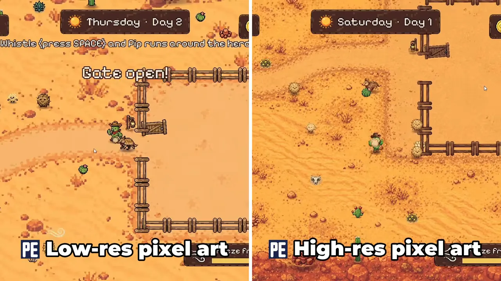
실험 조건은 하나만 다르게 잡았어요. 두 버전 모두 같은 게임 디자인 문서와 같은 빈 Godot 프로젝트에서 시작하고, 그림도 코드도 에셋도 없어요. 화면에 나오는 캐릭터·스프라이트·애니메이션은 전부 Claude Opus 5.5가 Pixel Engine MCP로 만들었어요. 발표자는 AI 슬롭처럼 보이지 않는, 크고 다듬어진 게임을 목표로 했다고 해요.
Pixel Engine을 Claude에 연결하기
Pixel Engine은 픽셀 아트 스프라이트와 애니메이션을 만드는 서비스예요. 발표자는 사람이 공들여 만든 도구라는 점도 좋다고 해요. 소개 페이지의 'Built With Care' 칸에 만든 사람이 직접 쓴 글이 있어요.
핵심은 Pixel Engine이 MCP 서버이기도 하다는 점이에요. 안내 페이지의 'How it connects' 아래 회색 칸에 붙여 넣을 주소가 있고, 그 아래 'Step by step'에 Claude용 절차가 적혀 있어요.
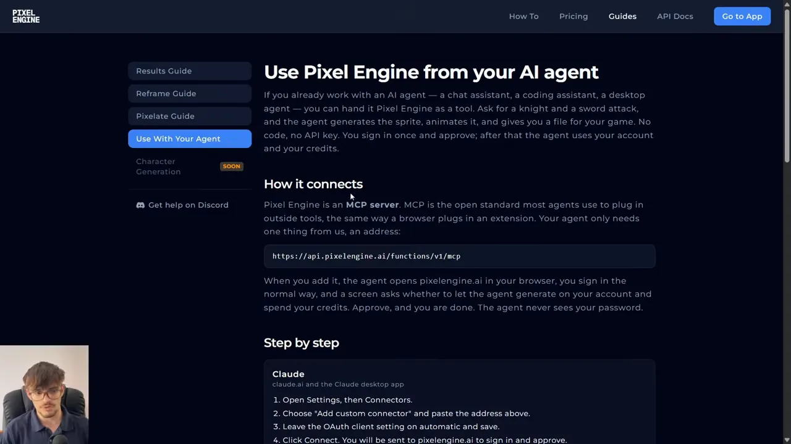
- Claude에서 사용자 지정(Customize) → 커넥터(Connectors)로 가요
- 추가 → 커스텀 커넥터 추가를 눌러요 — 이름은 Pixel Engine, 주소는
https://api.pixelengine.ai/functions/v1/mcp. - Continue를 누르고, 목록에서 Pixel Engine의 Connect를 눌러요 Pixel Engine 로그인 창이 뜨고, 로그인하면 연결이 끝나요
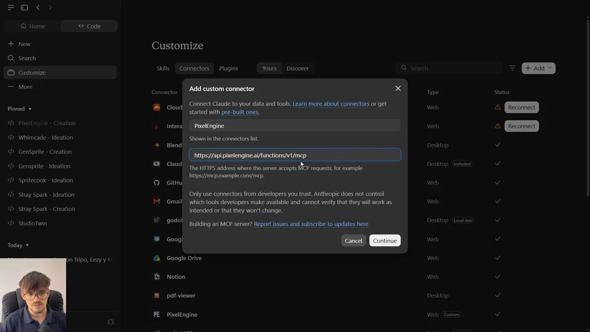
같은 프롬프트, 정확한 두 가지 크기
최근 Pixel Engine에 크기 지정 기능이 생겼어요. 같은 프롬프트로 픽셀 크기만 정해서 두 벌을 뽑을 수 있어요. Claude가 만든 비교 페이지(Tumbleweed Ranch Pixel Tiers)의 먼지 회오리 칸을 보면 왼쪽 'LOW'는 30×33px, 오른쪽 'HIGH'는 82×95px이에요. 둘 다 6프레임, 12fps예요.
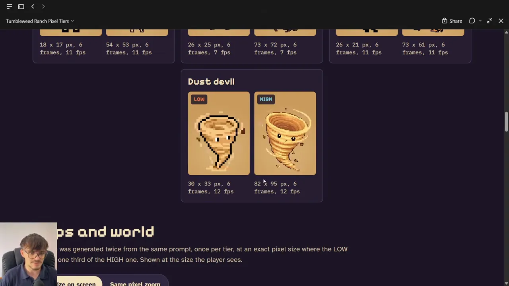
캐릭터 칸에는 애니메이션 버튼이 따로 있어요. 목장 주인(Rancher)은 walk side, walk front, walk back, idle, whistle 다섯 가지이고, 아르마딜로 Pip은 run과 idle이 있어요. 맨 위 'Same size on screen'과 'Same pixel zoom' 버튼으로 보기 방식을 바꿀 수 있어요.
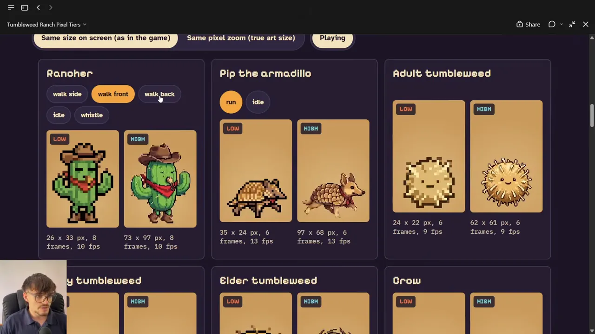
소품도 같은 방식으로 두 벌씩 있어요. 건초 더미, 통, 선인장, 아가베, 바위, 소 두개골이 모두 'LOW'와 'HIGH'로 짝을 이뤄요. 고해상도 쪽이 대략 세 배 크기예요.
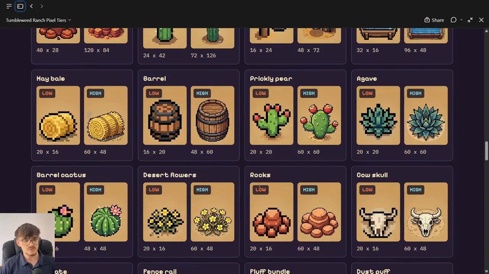
짧은 기획서 한 장에서 에셋까지
처음 콘셉트 이미지는 이렇게 생겼어요. 목장 주인이 사람이고, 반려동물은 아르마딜로예요. 오른쪽 우리 안에 텀블위드 무리가 들어가 있어요. 발표자는 다듬는 과정에서 주인공을 선인장으로 바꿨어요.
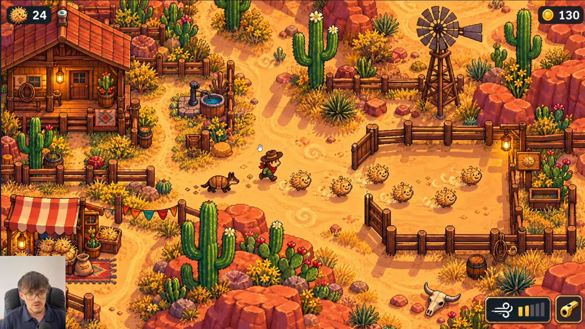
기획서도 아주 짧아요. Claude에게 간단한 PDF(Portable Document Format)를 만들자고 했고, 두 쪽짜리 문서가 나왔어요. 게임 아이디어와 함께, Pixel Engine이 제대로 도는지 확인하려고 뽑은 테스트 스프라이트가 들어 있어요. 위쪽은 고해상도 등급을 2배로 보여 준 것이고, 아래쪽 문구는 'MCP로 각 크기에서 만든 실제 테스트 스프라이트, 손대지 않음'이라는 뜻이에요.
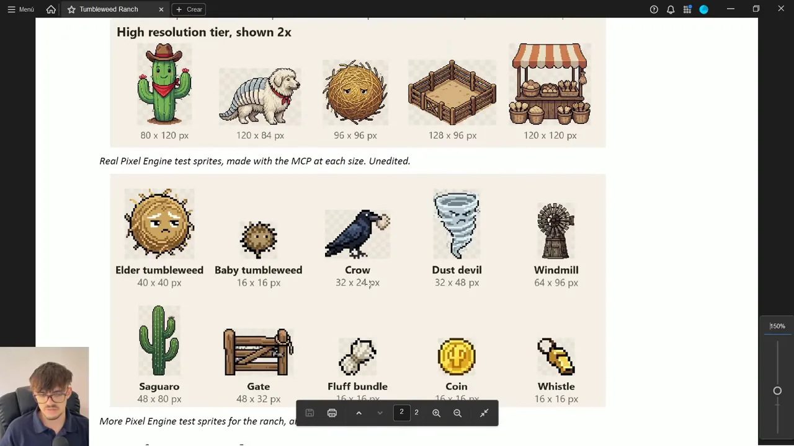
그 뒤 지시는 거의 한 줄이었어요. "이 콘셉트를 따라서 아트를 전부 만들어." Claude 세션 화면을 보면 그 흐름이 남아 있어요. 'Godot AI is live'로 에디터 연결을 확인하고, 배경 에이전트에게 효과음과 음악을 맡긴 뒤, Pixel Engine 호출을 한 번에 내려받고 기록하는 pe_batch.py를 만들었어요. 그 아래로 generate_sprite 호출이 줄지어 있어요.
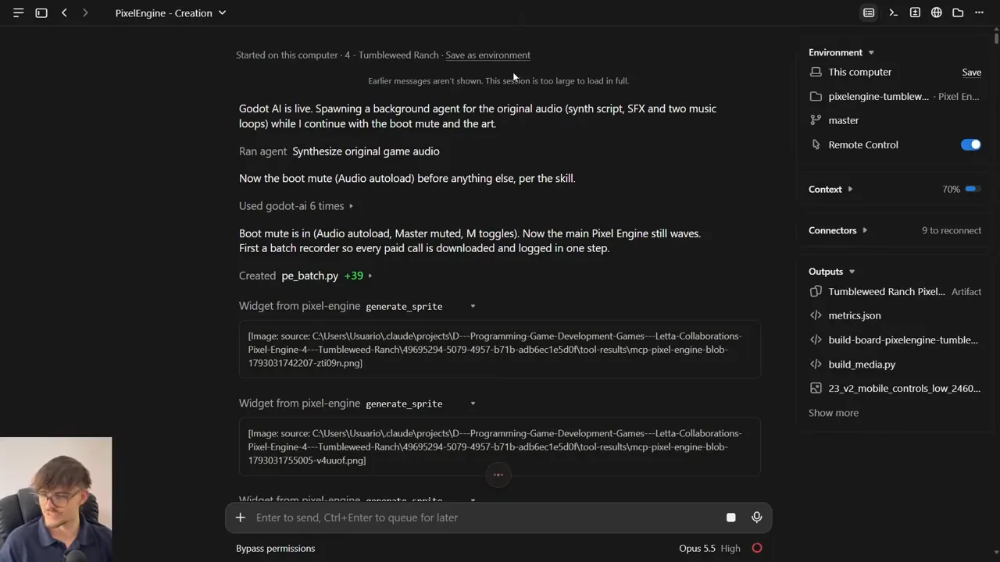
생성 결과를 열어 보면 선인장 목장 주인의 옆·앞·뒤 모습, 아르마딜로, 텀블위드가 한 줄로 나와요. Claude는 이렇게 만든 고해상도·저해상도 결과물을 그대로 Godot 프로젝트에 넣었어요.
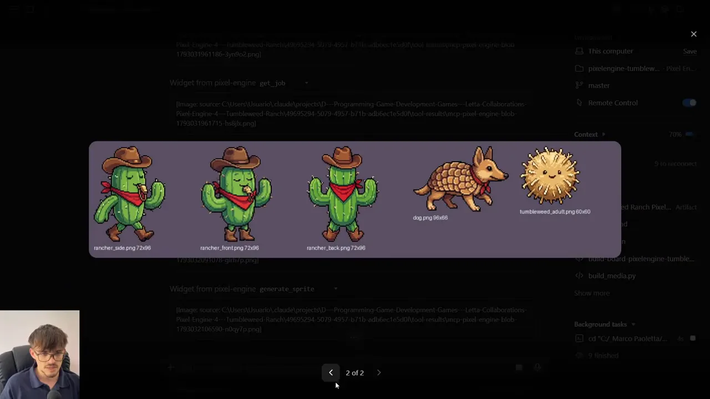
Godot AI로 에디터까지 맡기기
Claude 같은 도구는 기본적으로 Godot 에디터 안을 직접 만지지 못해요. 파일은 쓸 수 있어도, 에디터에서 씬을 만들고 노드를 붙이는 일은 못 하죠. 그래서 발표자는 Godot AI라는 무료 오픈소스 플러그인을 하나 더 붙였어요. 이것도 MCP라서, 연결하면 Claude가 에디터를 직접 조작해요.
그림으로 정리하면 이래요. Claude 하나에 MCP 두 개가 붙고, 각자 맡은 일이 달라요.
설치는 Godot의 Asset Store 탭에서 시작해요. 검색창에 godot ai를 치면 목록에 'Godot AI'가 나와요.
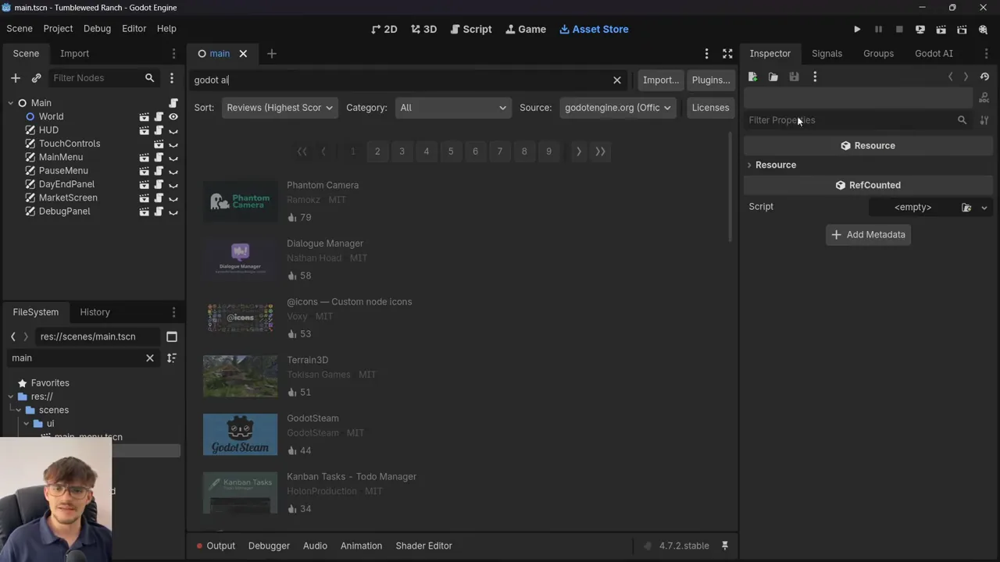
- Asset Store에서 Godot AI를 골라 다운로드해요
- 프로젝트 설정의 플러그인 탭에서 활성화해요
- 오른쪽 Godot AI 패널에 업데이트가 있으면 먼저 업데이트해요
- Clients & Tools에서 Claude Desktop의 Configure를 눌러요 패널에 'Server connected'가 떠요
Clients 창에는 Claude Code, Claude Desktop, Codex, Cursor, VS Code 같은 클라이언트가 줄지어 있고, 줄마다 Configure 버튼이 있어요. 오른쪽 패널 위쪽에는 빨간 점과 함께 '8000번 포트에 호환되지 않는 서버'가 있다는 경고가 보여요.
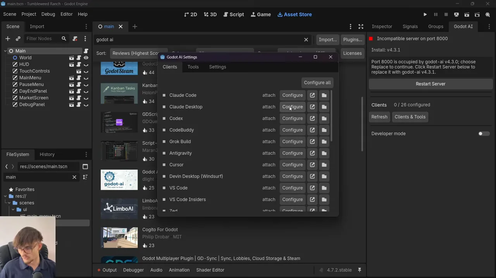
고해상도 버전 플레이와 에디터에서 손보기
먼저 고해상도 버전을 플레이해요. 하루는 우리 문을 여는 데서 시작해요. 화면 왼쪽 위 숫자가 지금까지 우리에 넣은 텀블위드 수이고, 가운데 위에는 요일과 날짜가 있어요. 오른쪽 아래 노란 버튼이 호루라기, 그 옆 막대가 바람 상태예요.
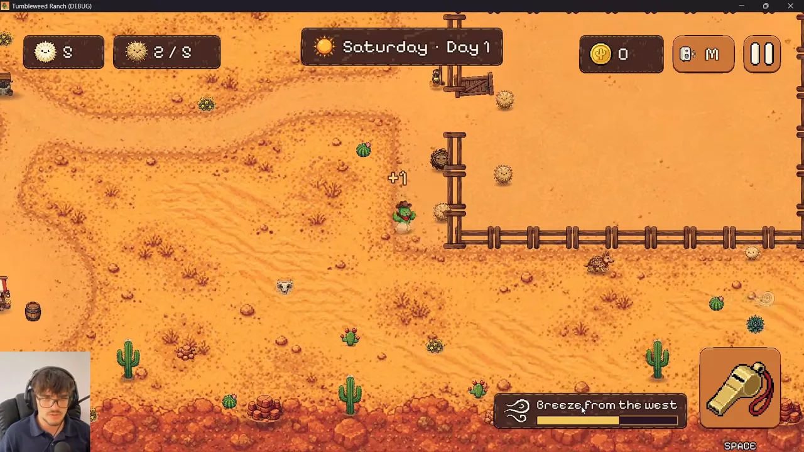
게임의 하루는 이렇게 돌아가요. 영상에서 실제로 플레이한 순서만 옮겼어요.
flowchart LR A["우리 문 열기"] --> B["텀블위드 몰기
호루라기로 Pip 부르기"] B --> C["하루 마감"] C --> D["토요일 장터
털 팔고 업그레이드"] D --> E["다음 날
방해꾼 등장"] E --> B
첫날을 끝내면 토요일 장터(Saturday Market)로 가요. 카드 네 장이 업그레이드이고, 아래 왼쪽 버튼으로 모은 털(fluff)을 개당 4코인에 팔아요.
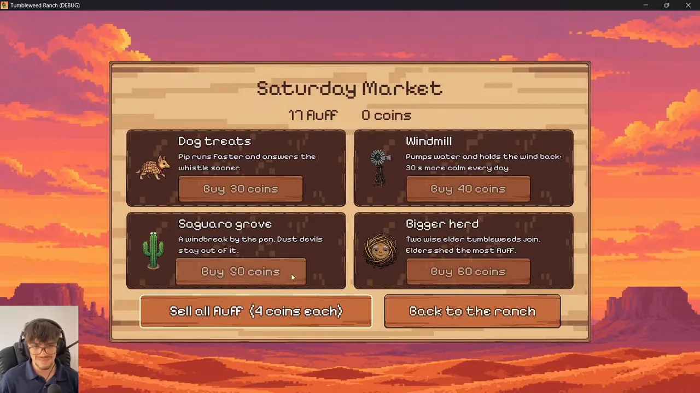
둘째 날에는 방해꾼이 나와요. 화면 가운데 문구가 '까마귀다, 털에서 쫓아내!'라는 뜻이에요. 까마귀가 무리를 겁주고 털을 훔쳐 가서, 호루라기로 쫓아내야 해요.
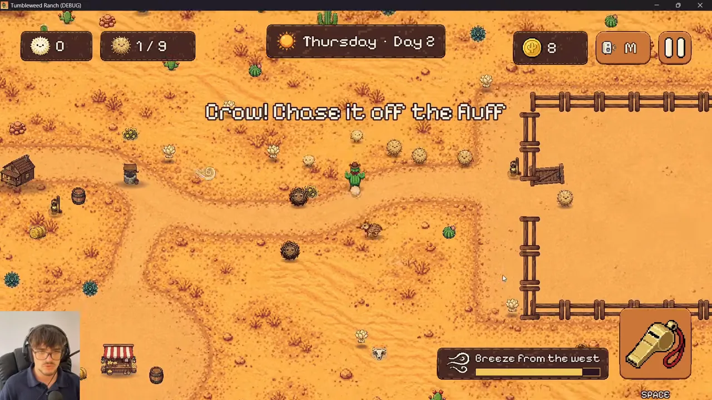
너무 작은 집, 에디터에서 바로 고치기
플레이하다 보니 목장 집과 우물이 너무 작았어요. Godot로 만든 게임이라 고치기 쉬워요. world 씬에서 RanchHouse를 찾아 ranch_house 씬을 열면, 가운데 작게 집 스프라이트가 보여요.
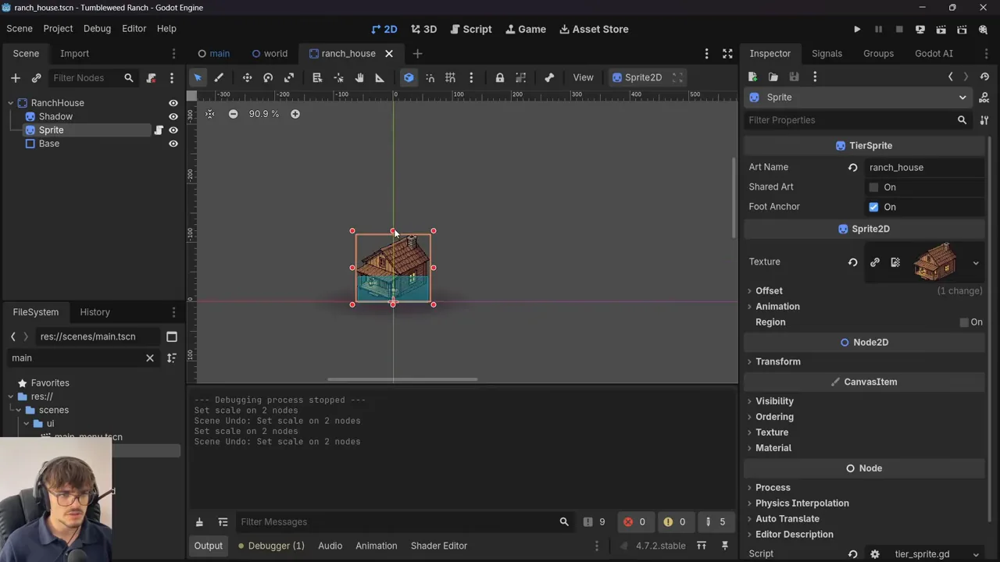
처음엔 두 노드를 같이 선택해 Scale을 바꾸다가 화면이 깨졌고, 하나씩 다시 키웠어요. 확대해도 픽셀이 뭉개지지 않아 진짜 픽셀 아트라는 점을 확인했어요. 이어서 Flip H로 좌우를 뒤집고 위치를 옮겼어요. 아래 Output 로그에 Sprite를 2.96배, Shadow를 6.25×1.36으로 키운 기록이 남아 있어요.
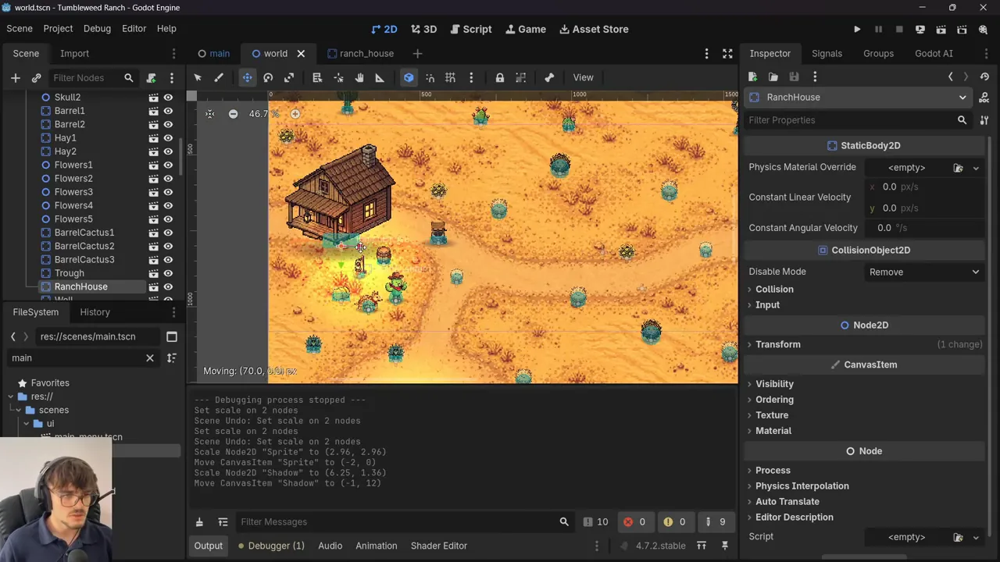
그런데 다시 실행하니 크기가 원래대로 돌아갔어요. 발표자는 게임이 로드될 때 코드에서 크기를 다시 정하는 로직이 있는 것 같다고 짐작만 하고 넘어가요. 에디터에서 바꾼 값이 게임에 남으려면 그 코드도 같이 봐야 한다는 뜻이에요.
저해상도 버전과 비교
이번엔 32px 버전이에요. 규칙도 지도도 같고, 캐릭터·반려동물·적의 디테일만 줄었어요. 화면 왼쪽 위 집, 가운데 선인장 캐릭터와 아르마딜로를 앞 섹션의 고해상도 캡처와 비교해 보면 픽셀 덩어리가 확실히 굵어요.
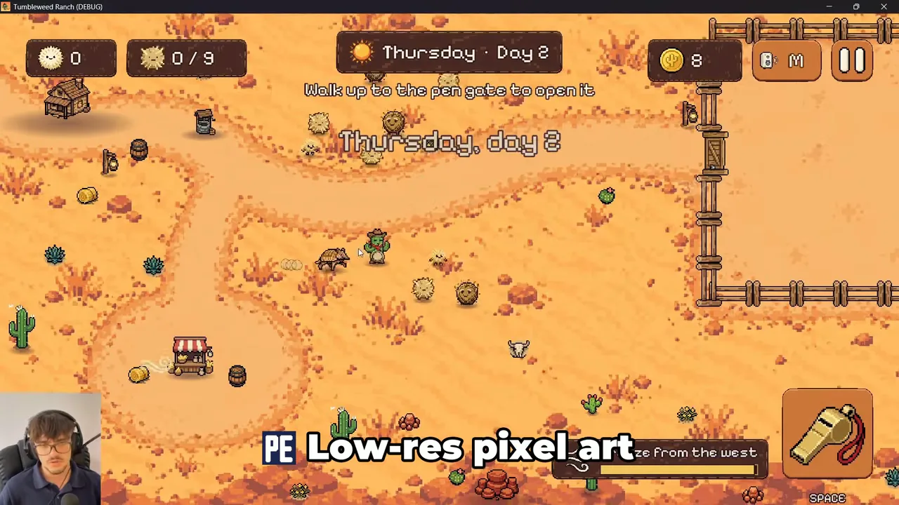
해상도보다 중요한 것은 일관성
발표자가 가장 강조한 원칙이에요. 32×32, 64×64, 128×128 중 무엇을 골라도 괜찮아요. 대신 모든 에셋이 같은 픽셀 크기와 같은 스타일을 지켜야 해요. 128px 스프라이트를 32px 스프라이트 위에 섞으면 픽셀 굵기가 달라서 바로 어색해 보여요.
It doesn't matter if you pick 32 by 32, 64 by 64, 128 by 128. The important thing is that you keep it consistent between all your assets.
32×32든 64×64든 128×128이든 상관없어요. 중요한 건 모든 에셋 사이에서 일관성을 지키는 거예요.
— 영상 09:56
Claude가 만든 비교 페이지에서 읽은 크기를 표로 모았어요. 같은 대상인데 고해상도 쪽이 가로세로 약 세 배예요. 프레임 수와 재생 속도는 두 등급이 같아요.
| 대상 | 저해상도 | 고해상도 | 프레임·속도 |
|---|---|---|---|
| 목장 주인(Rancher) | 26×33px | 73×97px | 8프레임, 10fps |
| 아르마딜로 Pip | 35×24px | 97×68px | 6프레임, 13fps |
| 어른 텀블위드 | 24×22px | 62×61px | 6프레임, 9fps |
| 먼지 회오리 | 30×33px | 82×95px | 6프레임, 12fps |
| 통(소품) | 16×20px | 48×60px | 정지 이미지 |
Godot에서 rancher 씬을 열면 애니메이션을 하나씩 볼 수 있어요. 왼쪽 아래 목록에 idle, walk_back, walk_front, walk_side, whistle 다섯 개가 있고, 오른쪽 아래에 지금 고른 walk_back의 프레임이 0, 1, 2 순서로 나열돼요.
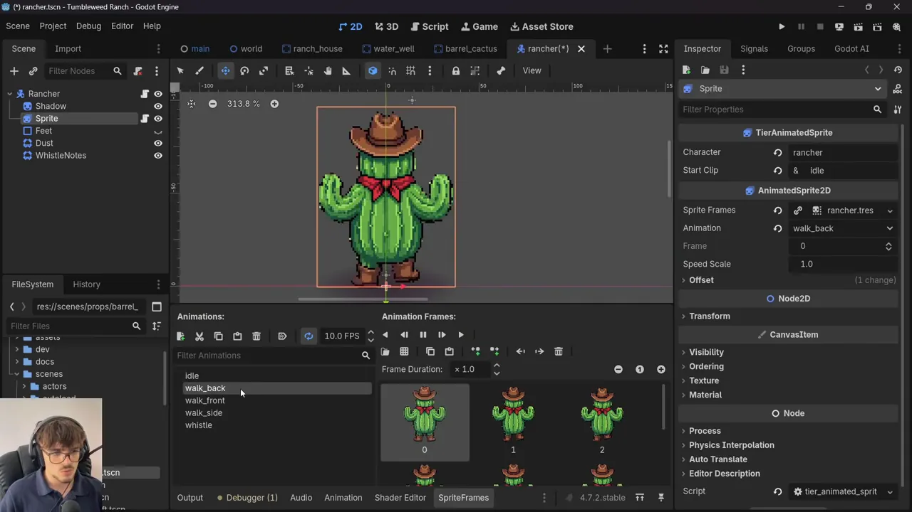
비교 페이지에는 게임 장면을 반씩 잘라 보여 주는 칸도 있어요. 왼쪽 위 라벨이 'LOW 32 px', 오른쪽 위가 'HIGH 128 px'이고, 가운데 손잡이를 끌어 경계를 옮겨요. 위쪽 버튼으로 새벽 목장, 우리 문 앞 무리, 집과 문 3배 확대 장면을 고를 수 있어요.
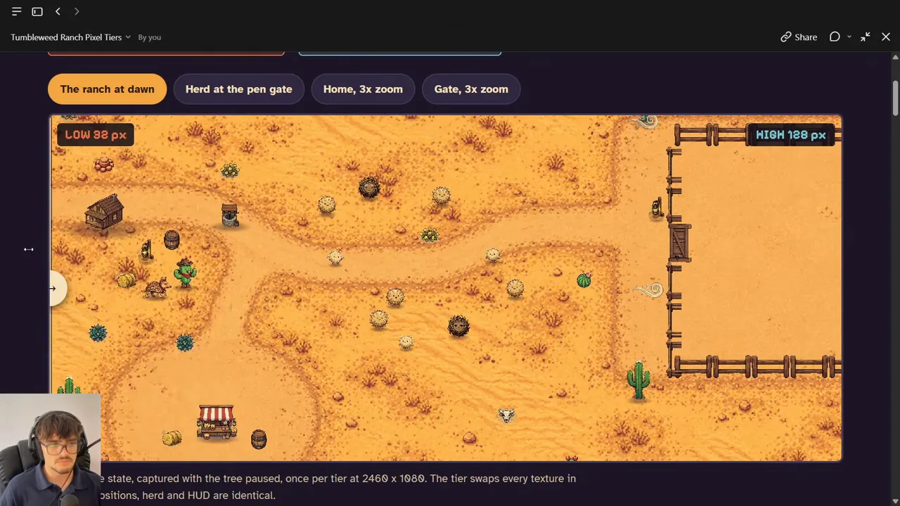
화이트보드에는 콘셉트에서 애니메이션까지 이어진 결과물이 한눈에 정리돼 있어요. 위쪽에 선인장 캐릭터의 걷기·대기·호루라기 동작, 아래에 적 두 종류(까마귀, 먼지 회오리), 구조물, 소품, 효과가 분류돼 있어요.
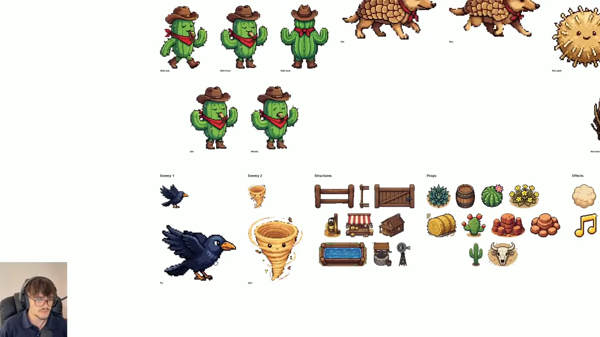
시간과 비용, 그리고 결론
마지막은 비용이에요. 화면의 'Build time and cost' 표 위쪽은 Pixel Engine 그림 비용이고, 열은 저해상도('LOW RES'), 고해상도('HIGH RES'), 두 버전이 함께 쓰는 공용 UI(Shared UI)예요.
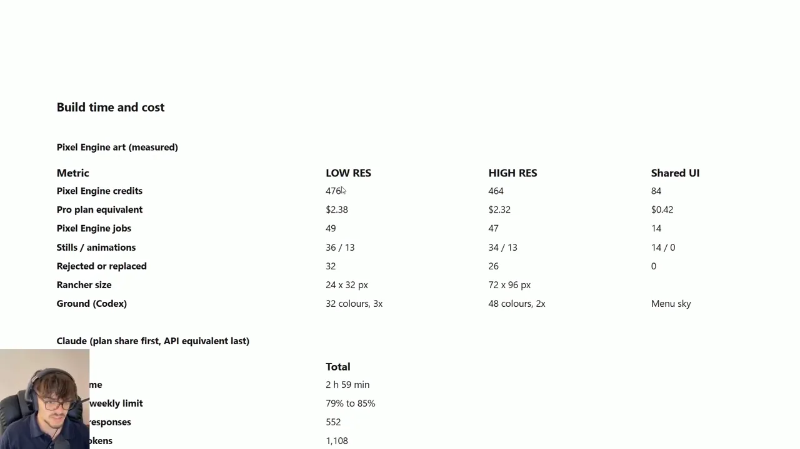
| 항목 | 저해상도 | 고해상도 | 공용 UI |
|---|---|---|---|
| Pixel Engine 크레딧 | 476 | 464 | 84 |
| Pro 요금제 환산 | 2.38달러 | 2.32달러 | 0.42달러 |
| 생성 작업 수 | 49 | 47 | 14 |
| 정지 이미지 / 애니메이션 | 36 / 13 | 34 / 13 | 14 / 0 |
| 버리거나 다시 만든 것 | 32 | 26 | 0 |
| 목장 주인 크기 | 24×32px | 72×96px | — |
두 해상도 비용이 비슷한 이유는 표 아래 각주에 있어요. Pixel Engine은 크기와 상관없이 정지 이미지 6크레딧, 애니메이션 20크레딧을 받아요. 실제로 저해상도는 36×6 + 13×20 = 476, 고해상도는 34×6 + 13×20 = 464로 표 숫자와 맞아요. 셋을 합치면 1,024크레딧, 약 5.12달러예요. 발표자는 "두 게임 합쳐 5달러"라고 정리해요.
표 아래쪽은 Claude 사용량이에요. 빌드 시간 2시간 59분, 주간 한도 79%에서 85%, 모델 응답 552번이에요. 토큰 대부분은 캐시에서 나왔어요.
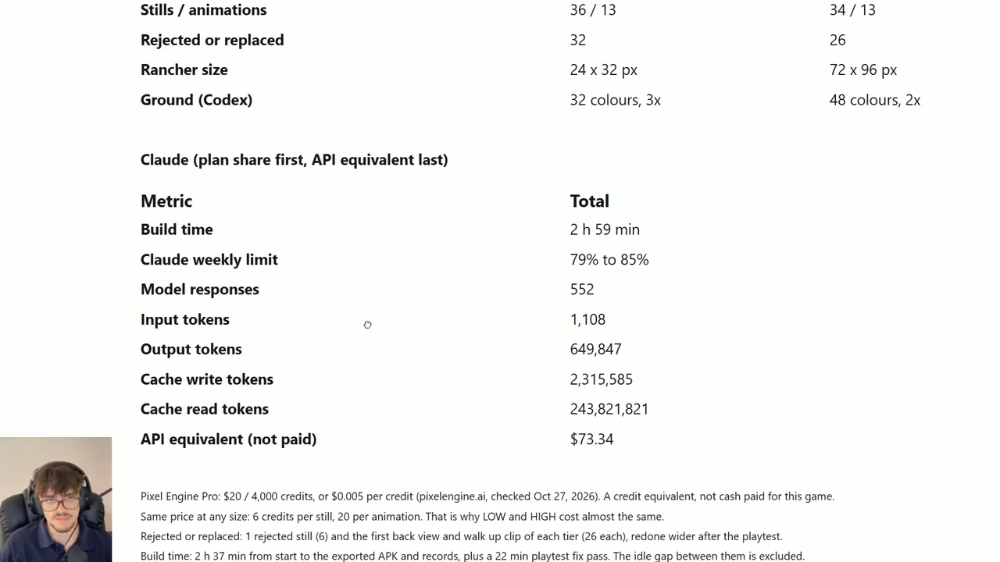
발표자는 월 200달러짜리 Max 요금제를 쓰고, 작업은 약 3시간, 수정은 두세 번 반복했다고 해요. 주간 한도의 6%로 출력 토큰 약 65만 개, 캐시 쓰기 토큰 약 230만 개를 썼으니 효율이 좋다는 평가예요. 각주에 따르면 빌드 시간은 시작부터 APK(Android Package) 내보내기까지 2시간 37분, 플레이 테스트 뒤 수정에 22분이에요.
발표자는 크레딧 가격을 Pixel Engine 요금제 화면에서 가져왔다고 설명해요. 화면에는 Free 0달러(월 100크레딧), Plus 12달러(2,000크레딧), Pro 20달러(4,000크레딧), Ultra 60달러(12,000크레딧)가 보이고, 위쪽에 작업별 크레딧(이미지 생성 6–36, 애니메이션 20–26)이 적혀 있어요.
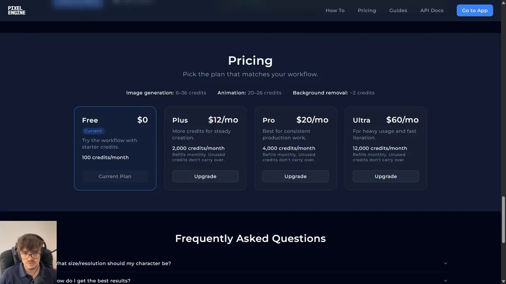
모바일에서도 돌아가요
두 버전 모두 안드로이드 폰에서 돌아가요. 발표자가 Claude에게 모바일 조작을 넣고 안드로이드에서 잘 돌도록 맞춰 달라고 따로 요청했어요. 화면 왼쪽 아래 가상 조이스틱, 오른쪽 아래 호루라기 버튼이 보여요.
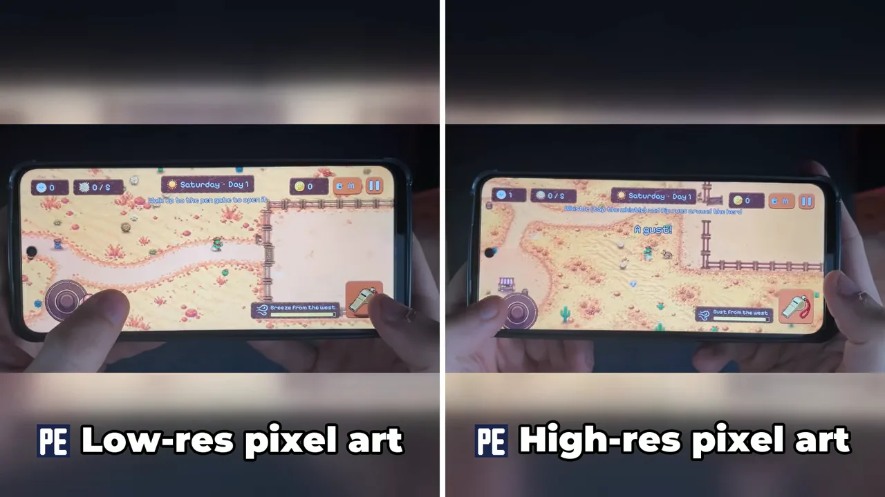
결론은 취향이에요. 발표자는 둘 다 좋다고 하면서도, 하나를 고르라면 고해상도를 택하겠다고 해요. 플레이어와 반려동물 같은 곳에 픽셀이 더 많아서 디테일이 살고, 게임이 조금 더 완성도 있어 보인다는 이유예요.